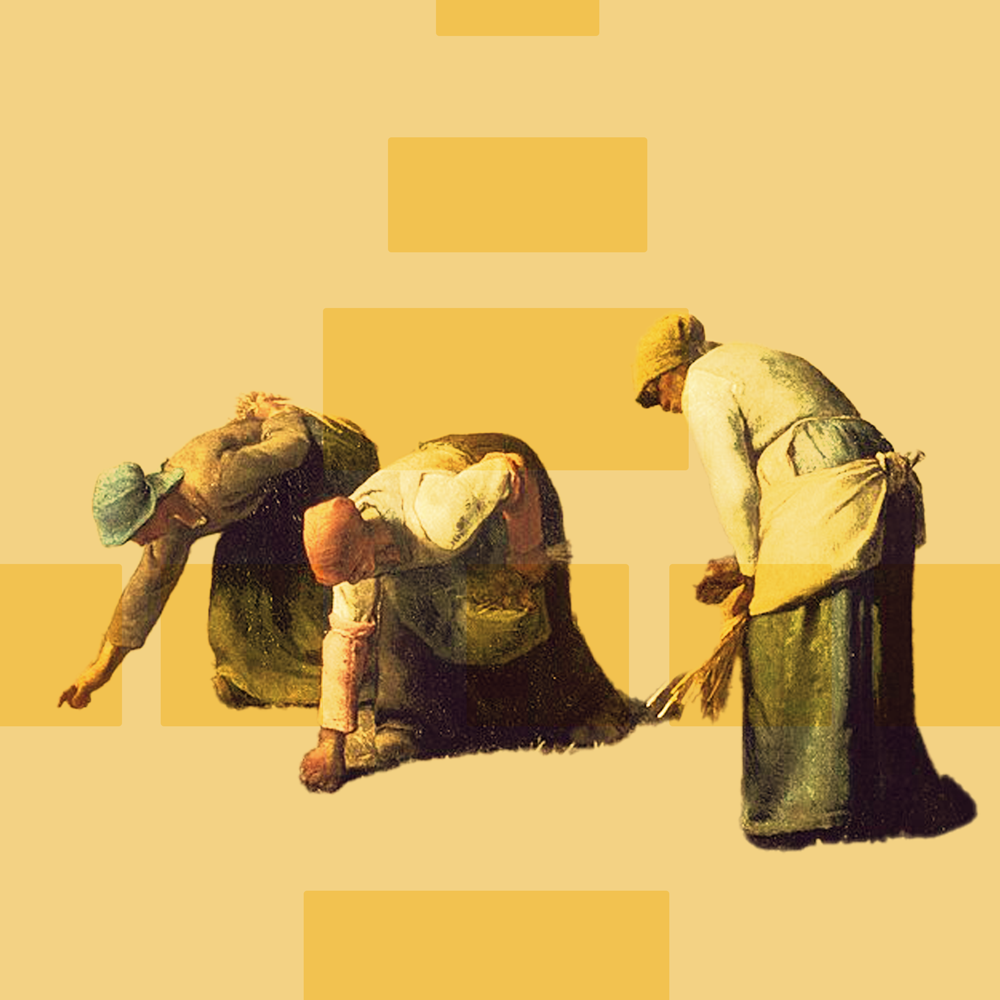
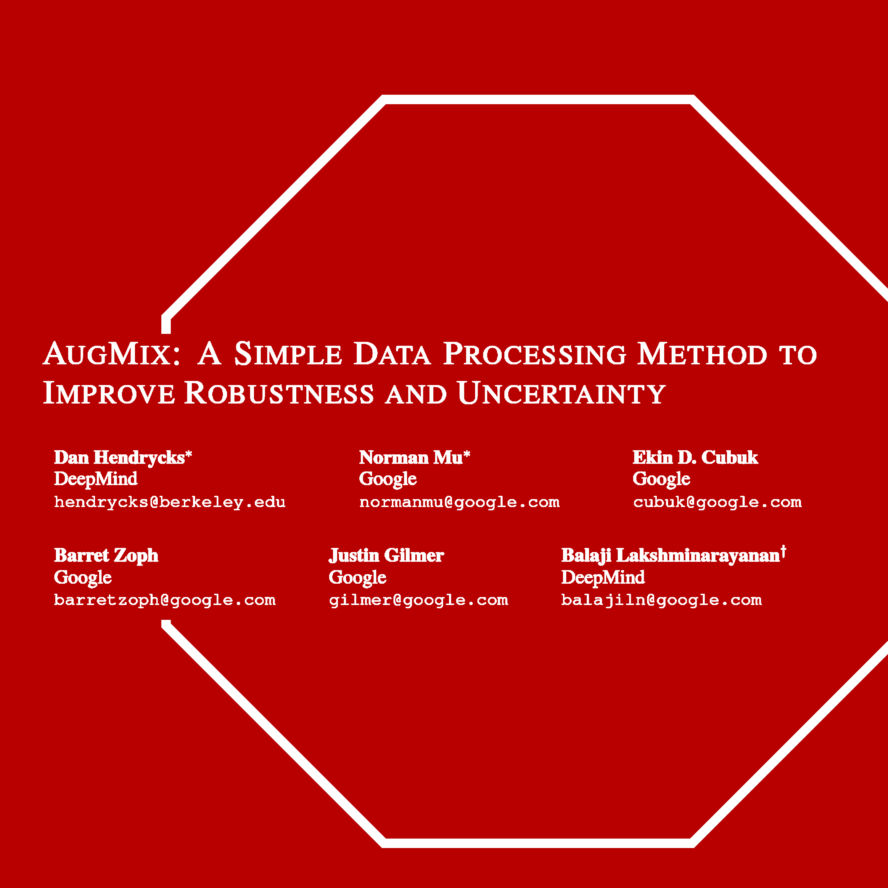
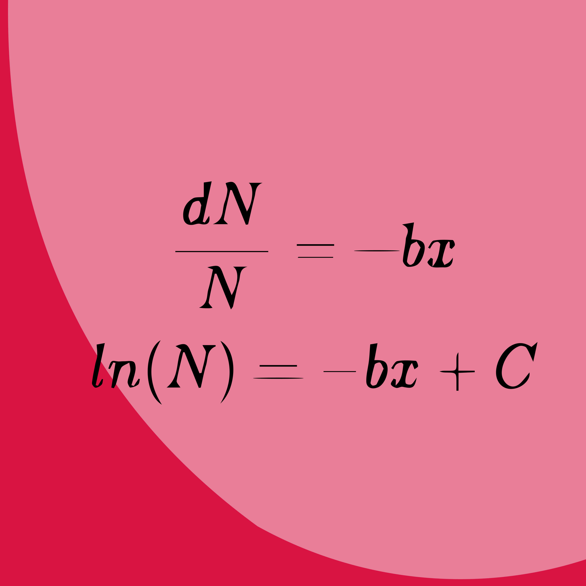
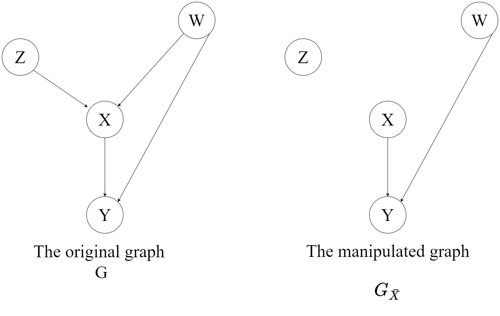

Ritwik Raha
Home
Blog
Blog
Welcome to the blog! Here you’ll find posts on technical writing, machine learning, and more.
Interactive Grey Wolf Optimization
This is an interactive simulation of the Grey Wolf Optimizer (GWO) algorithm attempting to solve the
Rastrigin Function
. The global optimum is at the center
(0,0)
.
Dec 12, 2025
Ritwik Raha
Notes on Technical Writing
Since the very start of my career, I have viewed technical writing as more than just a means of communication—it’s a powerful tool for both teaching and learning.
Dec 29, 2024
Ritwik Raha

Mixture of Experts for Dummies
This post is meant as a tutorial to help one get started with the basic concept of a Mixture-of-Expert. It looks at various types of MoEs and their individual nuances. Read…
Dec 7, 2023
Ritwik Raha

Understanding AugMix
In machine learning, we use a set of data (known as the “training” data) to teach an algorithm how to solve a task. In this context, we’re talking about deep neural networks…
Jul 24, 2023
Ritwik Raha
What is Computational Photography
Computational photography refers to digital image capture and processing techniques that use digital computation instead of optical processes. - Wikipedia
Jan 18, 2022
Ritwik Raha
The Math of Photoshop Blend Modes
Photoshop is a wonderful tool for working with images. It is a delight to work with as a designer and it is an instrument to marvel at as a Computer Vision engineer.
Nov 9, 2021
Ritwik Raha

Why model decay using the exponential function?
So you have been going through mathematical models and equations for all sorts of things and everywhere you go you see this equation.
Sep 14, 2021
Ritwik Raha

A Brief Introduction to Do-Calculus
Welcome back to Part 3 of The Causal Blog. The previous two parts introduced us to the world of causal inference and what are the various methodologies involved. You can…
Aug 10, 2021
Ritwik Raha
Studying Causality: The good, the bad, and the ugly.
Welcome back to Part 2 of The Causal Blog. The previous one was all about introducing Causality in the briefest way possible. You can find it right here.
Apr 28, 2021
Ritwik Raha
What do we mean when we talk about Causal Inference?
So what does Causal Inference really mean? What does it mean to cause? Is Causality really as simple as understanding cause and effect? Let us attempt to first understand…
Apr 12, 2021
Ritwik Raha
No matching items